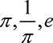
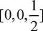
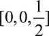

1.
Hoare, C.A.R.
, 1962. Quicksort. The Computer Journal
, 5(1), pp. 10–16.
2.
Dalley, S.
, 1989. Myths from Mesopotamia
. Oxford: Oxford University Press.
3.
Finkel, I.
, 2014. The Ark before Noah
. Hachette.
4.
Rawlinson, H.C.
, 1846. The Persian cuneiform inscription at Behistun, decyphered and translated. Journal of the Royal Asiatic Society of Great Britain and Ireland
, 10, pp. i–349.
5.
Knuth, D.E.
, 1972. Ancient Babylonian algorithms. Communications of the ACM
, 15(7), pp. 671–7.
6.
Fowler, D.
and Robson, E.
, 1998. Square root approximations in old Babylonian mathematics: YBC 7289 in context. Historia Mathematica
, 25(4), pp. 366–78.
8.
Harper, R.F.
, 1904. The Code of Hammurabi, King of Babylon
. Chicago: The University of Chicago Press.
9.
Jaynes, J.
, 1976. The Origin of Consciousness in the Breakdown of the Bicameral Mind
. New York: Houghton Mifflin Harcourt.
10.
Boyer, C.B.
and Merzbach, U.C.
, 2011. A History of Mathematics
. Oxford: John Wiley & Sons.
11.
Davis, W.S.
, 1913. Readings in Ancient History, Illustrative Extracts from the Source: Greece and the East
. New York: Allyn and Bacon.
12.
Beckmann, P.
, 1971. A history of Pi
. Boulder, CO: The Golem Press.
13.
Mackay, J.S.
, 1884. Mnemonics for 
. Proceedings of the Edinburgh Mathematical Society
, 3, pp. 103–7.
14.
Dietrich, L.
, Dietrich, O.
, and Notroff, J.
, 2017. Cult as a driving force of human history. Expedition Magazine
, 59(3), pp. 10–25.
15.
Katz, V.
, 2008. A History of Mathematics
. London: Pearson.
16.
Katz, V. J.
ed., 2007. The Mathematics of Egypt, Mesopotamia, China, India, and Islam
. Princeton, NJ: Princeton University Press.
21.
Cooley, J.W.
and Tukey, J.W.
, 1965. An algorithm for the machine calculation of complex Fourier series. Mathematics of Computation
, 19(90), pp. 297–301.
22.
Rockmore, D.N.
, 2000. The FFT: An algorithm the whole family can use. Computing in Science & Engineering
, 2(1), pp. 60–4.
23.
Anonymous, 2016. James William Cooley. New York Times
.
24.
Heidenman, C.
, Johnson, D.
, and Burrus, C.
, 1984. Gauss and the history of the fast Fourier transform. IEEE ASSP Magazine
, 1(4), pp. 14–21.
25.
Huxley, T.H.
, 1887. The Advance of Science in the Last Half-Century
. New York: Appleton and Company.
26.
Swade, D.
, 2000. The Cogwheel Brain
. London: Little, Brown.
27.
Babbage, C.
, 2011. Passages from the Life of a Philosopher
. Cambridge: Cambridge University Press.
28.
Menabrea, L.F.
and King, A.
, Countess of Lovelace, 1843. Sketch of the analytical engine invented by Charles Babbage. Scientific Memoirs
, 3, pp. 666–731.
29.
Essinger, J.
, 2014. Ada
’s algorithm: How Lord Byron’s daughter Ada Lovelace Launched the Digital Age
. London: Melville House.
30.
Kim, E.E.
and Toole, B.A.
, 1999. Ada and the first computer. Scientific American
, 280(5), pp. 76–81.
31.
Isaacson, W.
, 2014. The Innovators
. New York: Simon and Schuster.
32.
Turing, S.
, 1959. Alan M. Turing
. Cambridge: W. Heffer & Sons, Ltd.
33.
Turing, A.M.
, 1937. On computable numbers, with an application to the Entscheidungsproblem. Proceedings of the London Mathematical Society
, s2–42(1), pp. 230–65.
34.
Davis, M.
, 1983. Computability and Unsolvability
. Mineola, NY: Dover Publications.
35.
Strachey, C.
, 1965. An impossible program. The Computer Journal
, 7(4), p. 313.
36.
Turing, A.M.
, 1950. Computing machinery and intelligence. Mind
, 59(236), pp. 433–60.
37.
Copeland, B. Jack
., 2014. Turing
. Oxford: Oxford University Press.
38.
Abbe, C.
, 1901. The physical basis of long-range weather forecasts. Monthly Weather Review
, 29(12), pp. 551–61.
39.
Lynch, P.
, 2008. The origins of computer weather prediction and climate modeling. Journal of Computational Physics
, 227(7), pp. 3431–44.
40.
Hunt, J.C.R.
, 1998. Lewis Fry Richardson and his contributions to mathematics, meteorology, and models of conflict. Annual Review of Fluid Mechanics
, 30(1), pp. xiii–xxxvi.
41.
Mauchly, J.W.
, 1982. The use of high speed vacuum tube devices for calculating. In: B. Randall
, ed., The Origins of Digital Computers
. Berlin: Springer, pp. 329–33.
42.
Fritz, W.B.
, 1996. The women of ENIAC. IEEE Annals of the History of Computing
, 18(3), pp. 13–28.
43.
Ulam, S.
, 1958. John von Neumann 1903–1957. Bulletin of the American Mathematical Society
, 64(3), pp. 1–49.
44.
Poundstone, W.
, 1992. Prisoner
’s Dilemma
. New York: Doubleday.
45.
McCorduck, P.
, 2004. Machines Who Think
. Natick, MA: AK Peters.
46.
Goldstein, H.H.
, 1980. The Computer from Pascal to von Neumann
. Princeton, NJ: Princeton University Press.
47.
Stern, N.
, 1977. An Interview with J. Presper Eckert
. Charles Babbage Institute, University of Minnesota.
48.
Von Neumann, J.
, 1993. First draft of a report on the EDVAC. IEEE Annals of the History of Computing
, 15(4), pp. 27–75.
49.
Augarten, S.
, 1984. A. W. Burks, ‘Who invented the general-purpose electronic computer?’ In Bit by bit: An Illustrated History of Computers
. New York: Ticknor & Fields. Epigraph, Ch. 4.
51.
Martin, C.D.
, 1995. ENIAC: Press conference that shook the world. IEEE Technology and Society Magazine
, 14(4), pp. 3–10.
52.
Nicholas Metropolis. The beginning of the Monte Carlo method. Los Alamos Science
, 15(584), pp. 125–30.
53.
Eckhardt, R.
, 1987. Stan Ulam, John von Neumann, and the Monte Carlo method. Los Alamos Science
, 15(131–136), p. 30.
55.
Metropolis, N.
and Ulam, S.
, 1949. The Monte Carlo method. Journal of the American Statistical Association
, 44(247), pp. 335–341.
56.
Charney, J.G.
and Eliassen, A.
, 1949. A numerical method for predicting the perturbations of the middle latitude westerlies. Tellus
, 1(2), pp. 38–54.
57.
Charney, J.G.
, 1949. On a physical basis for numerical prediction of large-scale motions in the atmosphere. Journal of Meteorology
, 6(6), pp. 372–85.
58.
Platzman, G.W.
, 1979. The ENIAC computations of 1950: Gateway to numerical weather prediction. Bulletin of the American Meteorological Society
, 60(4), pp. 302–12.
59.
Charney, J.G.
, Fjörtoft, R.
, and von Neumann, J.
, 1950. Numerical integration of the barotropic vorticity equation. Tellus
, 2(4), pp. 237–54.
60.
Blair, C.
, 1957. Passing of a great mind. Life Magazine
, 42(8), pp. 89–104.
61.
Lorenz, E.N.
, 1995. The Essence of Chaos
. Seattle: University of Washington Press.
62.
Lorenz, E.N.
, 1963. Deterministic nonperiodic flow. Journal of the Atmospheric Sciences
, 20(2), pp. 130–41.
63.
Epstein, E.S.
, 1969. Stochastic dynamic prediction. Tellus
, 21(6), pp. 739–59.
64.
European Centre for Medium-Range Weather Forecasts, 2020. Advancing global NWP through international collaboration.
http://www.ecmwf.int
. (Accessed 19 May 2020).
65.
Lynch, P.
and Lynch, O.
, 2008. Forecasts by PHONIAC. Weather
, 63(11), pp. 324–6.
66.
Shannon, C.E.
, 1950. Programming a computer for playing chess. Philosophical Magazine
, 41(314), pp. 256–75.
68.
Campbell-Kelly, M.
, 1985. Christopher Strachey, 1916–1975: A biographical note. Annals of the History of Computing
, 7(1), pp. 19–42.
70.
Foy, N.
, 1974. The word games of the night bird (interview with Christopher Strachey). Computing Europe
, 15, pp. 10–11.
71.
Roberts, S.
, 2017. Christopher Strachey’s nineteen-fifties love machine. The New Yorker
, February 14.
72.
Strachey, C.
, 1954. The ‘thinking’ machine. Encounter
, III, October.
73.
Strachey, C.S.
, 1952. Logical or non-mathematical programmes. In Proceedings of the 1952 ACM National Meeting
New York: ACM. pp. 46–9.
74.
McCarthy, J.
, Minsky, M.L.
, Rochester, N.
, and Shannon, C.E.
, 2006. A proposal for the Dartmouth summer research project on artificial intelligence, August 31, 1955. AI Magazine
, 27(4), pp. 12–14.
75.
Newell, A.
and Simon, H.
, 1956. The logic theory machine: A complex information processing system. IRE Transactions on Information Theory
. 2(3), pp. 61–79.
76.
Newell, A.
, Shaw, J.C.
, and Simon, H.A.
, 1959. Report on a general problem solving program. In Proceedings of the International Conference on Information Processing
. Paris: UNESCO. pp. 256–64.
77.
Newell, A.
and Simon, H.
, 1972. Human Problem Solving
. New York: Prentice-Hall.
78.
Schaeffer, J.
, 2008. One Jump Ahead: Computer Perfection at Checkers
. New York: Springer.
79.
Samuel, A.L.
, 1959. Some studies in machine learning using the game of checkers. IBM Journal of Research and Development
, 3(3), pp. 210–29.
80.
McCarthy, J.
and Feigenbaum, E.A.
, 1990. In memoriam: Arthur Samuel: Pioneer in machine learning. AI Magazine
, 11(3), p. 10.
81.
Samuel, A.L.
, 1967. Some studies in machine learning using the game of checkers. ii. IBM Journal of Research and Development
, 11(6), pp. 601–17.
82.
Madrigal, A.C.
, 2017. How checkers was solved. The Atlantic
. July 19.
83.
Simon, H.A.
, 1998. Allen Newell: 1927–1992. IEEE Annals of the History of Computing
, 20(2), pp. 63–76.
85.
Dreyfus, H.L.
, 2005. Overcoming the myth of the mental: How philosophers can profit from the phenomenology of everyday expertise. In: Proceedings and Addresses of the American Philosophical Association
, 79(2), pp. 47–65.
86.
Nilsson, N.J.
, 2009. The Quest for Artificial Intelligence
. Cambridge: Cambridge University Press.
87.
Schrijver, A.
, 2005. On the history of combinatorial optimization (till 1960). In: K. Aardal
, G.L. Nemhauser
, R. Weismantel
, eds., Discrete optimization
, vol. 12. Amsterdam: Elsevier. pp. 1–68.
88.
Dantzig, G.
, Fulkerson, R.
, and Johnson, S.
, 1954. Solution of a large-scale traveling-salesman problem. Journal of the Operations Research Society of America
, 2(4), pp. 393–410.
90.
Cook, S.A.
, 1971. The complexity of theorem-proving procedures. In: Proceedings of the 3rd annual ACM Symposium on Theory of Computing
. New York: ACM. pp. 151–8.
92.
Garey, M.R.
and Johnson, D.S.
, 1979. Computers and Intractability
. New York: W. H. Freeman and Company.
93.
Dijkstra, E.W.
, 1972. The humble programmer. Communications of the ACM
, 15(10), pp. 859–66.
94.
Dijkstra, E.W.
, 2001. Oral history interview with Edsger W. Dijkstra. Technical report, Charles Babbage Institute, August 2.
95.
Dijkstra, E.W.
, 1959. A note on two problems in connexion with graphs. Numerische mathematik
, 1(1), pp. 269–71.
96.
Darrach, B.
, 1970. Meet Shaky: The first electronic person. Life Magazine
, 69(21):58B–68B.
97.
Hart, P.E.
, Nilsson, N.J.
, and Raphael, B.
, 1968. A formal basis for the heuristic determination of minimum cost paths. IEEE Transactions on Systems Science and Cybernetics
, 4(2), pp. 100–7.
98.
Hitsch, G.J.
, Hortaçsu, A.
, and Ariely, D.
, 2010. Matching and sorting in online dating. The American Economic Review
, 100(1), pp. 130–63.
100.
Roth, A.E.
, 2003. The origins, history, and design of the resident match. Journal of the American Medical Association
, 289(7), pp. 909–12.
101.
Roth, A.E.
, 1984. The evolution of the labor market for medical interns and residents: A case study in game theory. The Journal of Political Economy
, 92, pp. 991–1016.
102.
Anonymous, 2012. Stable matching: Theory, evidence, and practical design. Technical report, The Royal Swedish Academy of Sciences.
103.
Kelly, K.
, 1994. Out of Control
. London: Fourth Estate.
104.
Vasbinder, J.W.
, 2014. Aha… That is Interesting!: John H. Holland, 85 years young
. Singapore: World Scientific.
105.
London, R.L.
, 2013. Who earned first computer science Ph.D.? Communications of the ACM : blog@CACM
, January.
106.
Scott, N.R.
, 1996. The early years through the 1960’s: Computing at the CSE@50. Technical report, University of Michigan.
107.
Fisher, R.A.
, 1999. The Genetical Theory of Natural Selection
. Oxford: Oxford University Press.
108.
Holland, J.H.
, 1992. Adaptation in Natural and Artificial Systems
. Cambridge, MA: The MIT Press.
109.
Holland, J.H.
, 1992. Genetic algorithms. Scientific American
, 267(1), pp. 66–73.
110.
Dawkins, R.
, 1986. The Blind Watchmaker
. New York: WW Norton & Company.
111.
Lohn, J.D.
, Linden, D.S.
, Hornby, G.S.
, Kraus, W.F.
, 2004. Evolutionary design of an X-band antenna for NASA’s space technology 5 mission. In: Proceedings of the IEEE Antennas and Propagation Society Symposium 2004
, volume 3. Monterey, CA, 20–25 June, pp. 2313–16. New York: IEEE.
112.
Grimes, W.
, 2015. John Henry Holland, who computerized evolution, dies at 86. New York Times
, August 19.
113.
Licklider, J.C.R.
, 1960. Man-computer symbiosis. IRE Transactions on Human Factors in Electronics
, 1(1), pp. 4–11.
114.
Waldrop, M.M.
, 2001. The Dream Machine
. London: Viking Penguin.
115.
Kita, C.I.
, 2003. JCR Licklider’s vision for the IPTO. IEEE Annals of the History of Computing
, 25(3), pp. 62–77.
116.
Licklider, J.C.R.
, 1963. Memorandum for members and affiliates of the intergalactic computer network. Technical report, Advanced Research Projects Agency, April 23.
117.
Licklider, J.C.R.
, 1965. Libraries of the Future
. Cambridge, MA: The MIT Press.
118.
Licklder, J.C.R.
and Taylor, R.W.
, 1968. The computer as a communication device. Science and Technology
, 76(2), pp. 1–3.
119.
Markoff, J.
, 1999. An Internet pioneer ponders the next revolution. The New York Times
, December 20.
121.
Leiner, B.M.
, Cerf, V.G.
, Clark, D.D.
, Kahn, R.E.
, Kleinrock, L.
, Lynch, D.C.
, Postel, J.
, Robers, L.G.
, and Wolff, S.
, 2009. A brief history of the Internet. ACM SIGCOMM Computer Communication Review
, 39(5), pp. 22–31.
122.
Davies, D.W.
, 2001. An historical study of the beginnings of packet switching. The Computer Journal
, 44(3), pp. 152–62.
123.
Baran, P.
, 1964. On distributed communications networks. IEEE Transactions on Communications Systems
, 12(1), pp. 1–9.
124.
McQuillan, J.
, Richer, I.
, and Rosen, E.
, 1980. The new routing algorithm for the ARPANET. IEEE Transactions on Communications
, 28(5), pp. 711–19.
125.
McJones, P.
, 2008. Oral history of Robert (Bob) W. Taylor. Technical report, Computer History Museum.
126.
Metz, C.
, 2012. Bob Kahn, the bread truck, and the Internet’s first communion. Wired
, August 13.
127.
Vint, C.
and Kahn, R.
, 1974. A protocol for packet network interconnection. IEEE Transactions of Communications
, 22(5), pp. 637–48.
130.
Lee, J.
, 1998. Richard Wesley Hamming: 1915–1998. IEEE Annals of the History of Computing
, 20(2), pp. 60–2.
131.
Suetonius, G.
, 2009. Lives of the Caesars
. Oxford: Oxford University Press.
132.
Singh, S.
, 1999. The Code Book: The Secret History of Codes & Code-breaking
. London: Fourth Estate.
133.
Diffie, W.
and Hellman, M.
, 1976. New directions in cryptography. IEEE Transactions on Information Theory
, 22(6), pp. 644–54.
134.
Rivest, R.L.
, Shamir, A.
, Adleman, L.
, 1978. A method for obtaining digital signatures and public-key cryptosystems. Communications of the ACM
, 21(2), pp. 120–6.
135.
Gardner, M.
, 1977. New kind of cipher that would take millions of years to break. Scientific American
. 237(August), pp. 120–4.
136.
Atkins, D.
, Graff, M.
, Lenstra, A.K.
, Leyland, P.C.
, 1994. The magic words are squeamish ossifrage. In: Proceedings of the 4th International Conference on the Theory and Applications of Cryptology
. Wollongong, Australia. November 28 November-1 December 1994. pp. 261–77. NY: Springer.
137.
Levy, S.
, 1999. The open secret. Wired
, 7(4).
138.
Ellis, J.H.
, 1999. The history of non-secret encryption. Cryptologia
, 23(3), pp. 267–73.
139.
Ellis, J.H.
, 1970. The possibility of non-secret encryption. In: British Communications-Electronics Security Group (CESG)
report. January.
140.
Bush, V.
, 1945. As we may think. The Atlantic
. 176(1), pp. 101–8.
141.
Manufacturing Intellect, 2001. Jeff Bezos interview on starting Amazon. YouTube [online].
https://youtu.be/p7FgXSoqfnI
. (Accessed 19 May 2020).
142.
Stone, B.
, 2014. The Everything Store: Jeff Bezos and the Age of Amazon
. New York: Corgi.
143.
Christian, B.
and Griffiths, T.
, 2016. Algorithms to Live By
. New York: Macmillan.
144.
Linden, G.
, Smith, B.
, and York, J.
, 2003. Amazon.com recommendations. IEEE Internet Computing
, 7(1), pp. 76–80.
146.
MacKenzie, I.
, Meyer, C.
, and Noble, S.
, 2013. How retailers can keep up with consumers. Technical report, McKinsey and Company, October.
148.
Vise, D.A.
, 2005. The Google Story
. New York: Macmillian.
149.
Battelle, J.
, 2005. The birth of Google. Wired
, 13(8), p. 102.
150.
Page, L.
, Brin, S.
, Motwani, R.
, and Winograd, T.
, 1999. The PageRank citation ranking: Bringing order to the web. Technical Report 1999–66, Stanford InfoLab, November.
151.
Brin, S.
and Page, L.
, 1998. The anatomy of a large-scale hypertextual web search engine. Computer Networks and ISDN Systems
, 30(1–7), pp. 107–117.
153.
Willmott, D.
, 1999. The top 100 web sites. PC Magazine
, February 9.
154.
Krieger, L.M.
, 2005. Stanford earns $336 million off Google stock. The Mercury News
, December 1.
156.
Smith, B.
and Linden, G.
, 2017. Two decades of recommender systems at Amazon.com. IEEE Internet Computing
, 21(3), pp. 12–18.
160.
Conan Doyle, A.
, 1890. The sign of four. Lippincott’s Monthly Magazine
. February.
161.
Kirkpatrick, D.
, 2010. The Facebook Effect
. New York: Simon and Schuster.
162.
Grimland, G.
, 2009. Facebook founder’s roommate recounts creation of Internet giant. Haaretz [online].
https://www.haaretz.com/1.5050614
. (Accessed 23 July 2019).
163.
Kaplan, K.A.
, 2003. Facemash creator survives ad board. The Harvard Crimson
, November.
164.
Investors Archive, 2017. Billionaire Mark Zuckerberg: Creating Facebook and startup advice. YouTube [online].
https://youtu.be/SSly3yJ8mKU
.
165.
Widman, J.
, 2011. Presenting EdgeRank: A guide to Facebook’s Newsfeed algorithm.
http://edgerank.net
. (Accessed 19 May 2020).
167.
Keating, G.
, 2012. Netflixed
. London: Penguin.
169.
Van Buskirk, E.
, 2009. How the Netflix prize was won. Wired
, September 22.
170.
Thompson, C.
, 2008. If you liked this, you’re sure to love that. The New York Times
. November 21.
171.
Piotte, M.
and Chabbert, M.
, 2009. The pragmatic theory solution to the Netflix grand prize. Technical report, Netflix.
172.
Koren, Y.
, 2009. The Bellkor solution to the Netflix grand prize. Netflix Prize Documentation
, 81:1–10.
173.
Johnston, C.
, 2012. Netflix never used its $1 million algorithm due to engineering costs. Wired
, April 16.
174.
Gomez-Uribe, C.A.
and Hunt, N.
, 2015. The Netflix recommender system: Algorithms, business value, and innovation. ACM Transactions on Management Information Systems
, 6(4), pp. 13:1–19.
175.
Ginsberg, J.
, Mohebbi, M.H.
, Patel, R.S.
, Brammer, L.
, Smolinkski, M.S.
, and Brilliant, L.
, 2009. Detecting influenza epidemics using search engine query data. Nature
, 457(7232), pp. 1012–14.
176.
Cook, S.
, Conrad, C.
, Fowlkes, A.L.
, Mohebbi, M.H.
, 2011. Assessing Google flu trends performance in the United States during the 2009 influenza virus A (H1N1) pandemic. PLOS ONE
, 6(8), e23610.
177.
Butler, D.
, 2013. When Google got flu wrong. Nature
, 494(7436), pp. 155.
178.
Lazer, D.
, Kennedy, R.
, King, G.
, Vespignani, A.
, 2014. The parable of Google Flu: Traps in big data analysis. Science
, 343(6176), pp. 1203–5.
179.
Lazer, D.
and Kennedy, R.
, 2015. What we can learn from the epic failure of Google flu trends. Wired
, October 1.
180.
Zimmer, B.
, 2011. Is it time to welcome our new computer overlords? The Atlantic
, February 17.
181.
Markoff, J.
, 2011. Computer wins on jeopardy: Trivial, it’s not. New York Times
, February 16.
182.
Gondek, D.C.
, Lally, A.
, Kalyanpur, A.
, Murdock, J.W.
, Duboue, P.A.
, Zhang, L.
, Pan, Y.
, Qui, Z.M.
, and Welty, C.
, 2012. A framework for merging and ranking of answers in DeepQA. IBM Journal of Research and Development
, 56(3.4), pp. 14:1–12.
184.
Ferrucci, D.A.
, 2012. Introduction to this is Watson. IBM Journal of Research and Development
, 56(3.4), pp. 1:1–15.
187.
Gustin, S.
, 2011. Behind IBM’s plan to beat humans at their own game. Wired
, February 14.
188.
Lally, A.
, Prager, M.
, McCord, M.C.
, Boguraev, B.K.
, Patwardhan, S.
, Fan, J.
, Fodor, P.
, and Carroll J.C.
, 2012. Question analysis: How Watson reads a clue. IBM Journal of Research and Development
, 56(3.4), pp. 2:1–14.
189.
Fan, J.
, Kalyanpur, A.
, Condek, D.C.
, and Ferrucci, D.A.
, 2012. Automatic knowledge extraction from documents. IBM Journal of Research and Development
, 56(3.4), pp. 5:1–10.
190.
Kolodner, J.L.
, 1978. Memory organization for natural language data-base inquiry. Technical report, Yale University.
191.
Kolodner, J.L.
, 1983. Maintaining organization in a dynamic long-term memory. Cognitive Science
, 7(4), pp. 243–80.
192.
Kolodner, J.L.
, 1983. Reconstructive memory: A computer model. Cognitive Science
, 7(4), pp. 281–328.
193.
Lohr, S.
, 2016. The promise of artificial intelligence unfolds in small steps. The New York Times
, February 29. (Accessed 19 May 2020).
194.
James, W.
, 1890. The Principles of Psychology
. NY: Holt.
195.
Hebb, D.O.
, 1949. The Organization of Behavior
. NY: Wiley.
196.
McCulloch, W.S.
and Pitts, W.
, 1943. A logical calculus of the ideas immanent in nervous activity. The Bulletin of Mathematical Biophysics
, 5(4), pp. 115–33.
197.
Gefter, A.
, 2015. The man who tried to redeem the world with logic. Nautilus
, February 21.
198.
Whitehead, A.N.
and Russell, B.
, 1910–1913. Principia Mathematica
. Cambridge: Cambridge University Press.
199.
Anderson, J.A.
and Rosenfeld, E.
, 2000. Talking Nets
. Cambridge, MA: The MIT Press.
200.
Conway, F.
and Siegelman, J.
, 2006. Dark Hero of the Information Age: In Search of Norbert Wiener The Father of Cybernetics
. New York: Basic Books.
201.
Thompson, C.
, 2005. Dark hero of the information age: The original computer geek. The New York Times
, March 20.
202.
Farley, B.W.A.C.
and Clark, W.
, 1954. Simulation of self-organizing systems by digital computer. Transactions of the IRE Professional Group on Information Theory
, 4(4), pp. 76–84.
203.
Rosenblatt, F.
, 1958. The Perceptron: A probabilistic model for information storage and organization in the brain. Psychological Review
, 65(6), pp. 386.
204.
Rosenblatt, F.
, 1961. Principles of neurodynamics. perceptrons and the theory of brain mechanisms. Technical report, DTIC Document.
205.
Anonymous, 1958. New Navy device learns by doing. The New York Times
, July 8.
206.
Minsky, M.
and Papert, S.
, 1969. Perceptrons
. Cambridge, MA: The MIT Press.
207.
Minksy, M.
, 1952. A neural-analogue calculator based upon a probability model of reinforcement. Technical report, Harvard University Psychological Laboratories, Cambridge, Massachusetts.
208.
Block, H.D.
, 1970. A review of Perceptrons: An introduction to computational geometry. Information and Control
, 17(5), pp. 501–22.
209.
Anonymous, 1971. Dr. Frank Rosenblatt dies at 43; taught neurobiology at Cornell. The New York Times
, July 13.
210.
Olazaran, M.
, 1996. A sociological study of the official history of the Perceptrons controversy. Social Studies of Science
, 26(3), pp. 611–59.
211.
Werbos, P.J.
, 1990. Backpropagation through time: What it does and how to do it. Proceedings of the IEEE
, 78(10), pp. 1550–60.
212.
Werbos, P.J.
, 1974. Beyond regression: New tools for prediction and analysis in the behavioral sciences
. PhD. Harvard University.
213.
Werbos, P.J.
, 1994. The Roots of Backpropagation
, volume 1. Oxford: John Wiley & Sons.
214.
Werbos, P.J.
, 2006. Backwards differentiation in AD and neural nets: Past links and new opportunities. In: H.M. Bücker
, G. Corliss
, P. Hovland
, U. Naumann
, and B. Norris
, eds., Automatic differentiation: Applications, theory, and implementations
. Berlin: Springer. pp. 15–34.
215.
Parker, D.B.
, 1985. Learning-logic: Casting the cortex of the human brain in silicon. Technical Report TR-47, MIT, Cambridge, MA.
216.
Lecun, Y.
, 1985. Une procédure d’apprentissage pour réseau a seuil asymmetrique (A learning scheme for asymmetric threshold networks). In: Proceedings of Cognitiva
85. Paris, France. 4–7 June, 1985. pp. 599–604.
217.
Rumelhart, D.E.
, Hinton, G.E.
, and Williams, R.J.
, 1986. Learning representations by back-propagating errors. Nature
, 323, pp. 533–36.
218.
Hornik, K.
, Stinchcombe, M.
, and White, H.
, 1989. Multilayer feedforward networks are universal approximators. Neural Networks
, 2(5), pp. 359–66.
220.
LeCun, Y.
, Boser, B.
, Denker, J.S.
, Henderson, D.
, Howard, R.E.
, Hubbard, W.
, and Jackel, L.D.
, 1989. Backpropagation applied to handwritten zip code recognition. Neural Computation
, 1(4), pp. 541–51.
221.
Thorpe, S.
, Fize, D.
, and Marlot, C.
, 1996. Speed of processing in the human visual system. Nature
, 381(6582), pp. 520–2.
222.
Gray, J.
, 2017. U of T Professor Geoffrey Hinton hailed as guru of new computing era. The Globe and Mail
, April 7.
223.
Allen, K.
, 2015. How a Toronto professor’s research revolutionized artificial intelligence. The Star
. April 17.
224.
Hinton, G.E.
, Osindero, S.
, and Teh, Y.W.
, 2006. A fast learning algorithm for deep belief nets. Neural Computation
, 18(7), pp. 1527–54.
225.
Ciresan, D.C.
, Meier, U.
, Gambardella, L.M.
, and Schmidhuber, J.
, 2010. Deep big simple neural nets excel on handwritten digit recognition. arXiv preprint arXiv:1003.0358
.
226.
Jaitly, N.
, Nguyen, P.
, Senior, A.W.
, and Vanhoucke, V.
, 2012. Application of pretrained deep neural networks to large vocabulary speech recognition. In: Proceedings of the 13th Annual Conference of the International Speech Communication Association (Interspeech)
. Portland, Oregon, 9–13 September 2012. pp. 257–81.
227.
Hinton, G.
, et al., 2012. Deep neural networks for acoustic modeling in speech recognition: The shared views of four research groups. IEEE Signal Processing Magazine
, 29(6), pp. 82–97.
228.
Krizhevsky, A.
, Sutskever, Il
, and Hinton, G.E.
, 2012. ImageNet classification with deep convolutional neural networks. In: C. Burges
, ed., Proceedings of the 27th Annual Conference on Neural Information Processing Systems 2013
. 5–10 December 2013, Lake Tahoe, NV. Red Hook, NY Curran. pp. 1097–1105.
229.
Bengio, Y.
, Ducharme, R.
, Vincent, P.
, and Jauvin, C.
, 2003. A neural probabilistic language model. Journal of Machine Learning Research
, 3, pp. 1137–55.
230.
Sutskever, I.
, Vinyals, O.
, and Le, Q.V.
, 2014. Sequence to sequence learning with neural networks. In: Z. Ghahramani
, M. Welling
, C. Cortes
, N.D. Lawrence
, and K.Q. Weinberger
, eds., Proceedings of the 28th Annual Conference on Neural Information Processing Systems 2014
. 8–13 December 2014 , Montreal, Canada. Red Hook, NY Curran. pp. 3104–12.
231.
Cho, K.
, Van Merriënboer, B.
, Bahdanau
, and Bengio, Y.
, 2014. On the properties of neural machine translation: Encoder-decoder approaches. arXiv preprint arXiv:1409.1259
.
232.
Bahdanau, D.
, Cho, K
, and Bengio, Y.
, 2014. Neural machine translation by jointly learning to align and translate. arXiv preprint arXiv:1409.0473
.
233.
Wu, Y
, et al., 2016. Google’s neural machine translation system: Bridging the gap between human and machine translation. arXiv preprint arXiv:1609.08144
.
234.
Lewis-Kraus, G.
, 2016. The great A.I. awakening. The New York Times
, December 20.
235.
LeCun, Y
, Bengio, Y.
, and Hinton, G.
, 2015. Deep learning. Nature
. 521(7553), pp. 436–44.
237.
Foster, R.W.
, 2009. The classic of Go.
http://idp.bl.uk/
. (Accessed 20 May 2020).
238.
Moyer, C.
, 2016. How Google’s AlphaGo beat a Go world champion. The Atlantic
, March.
239.
Morris, D.Z.
, 2016. Google’s Go computer beats top-ranked human. Fortune
, March 12.
240.
AlphaGo, 2017 [film]. Directed by Greg Kohs. USA: Reel as Dirt.
241.
Wood, G.
, 2016. In two moves, AlphaGo and Lee Sedol redefined the future. Wired
, March 16.
242.
Metz, C.
, 2016. The sadness and beauty of watching Google’s AI play Go. Wired
, March 11.
244.
Silver, D.
, et al., 2016. Mastering the game of Go with deep neural networks and tree search. Nature
, 529(7587), pp. 484–9.
245.
Hern, A.
, 2016. AlphaGo: Its creator on the computer that learns by thinking. The Guardian
, March 15.
246.
Burton-Hill, C.
, 2016. The superhero of artificial intelligence: can this genius keep it in check? The Guardian
, February 16.
248.
Mnih, V.
, et al., 2015. Human-level control through deep reinforcement learning. Nature
, 518(7540), p. 529.
249.
Silver, D.
, et al., 2017. Mastering the game of Go without human knowledge. Nature
, 550(7676), pp. 354–9.
250.
Silver, D.
, et al., 2018. A general reinforcement learning algorithm that masters Chess, Shogi, and Go through self-play. Science
, 362(6419), pp. 1140–4.
254.
Assange, J.
, Appelbaum, J.
, Maguhn, A.M.
, and Zimmermann, J.
, 2016. Cypherpunks: Freedom and the Future of the Internet
. London: OR books.
256.
Nakamoto, S.
, 2008. Bitcoin: A peer-to-peer electronic cash system. Working Paper.
260.
L.S., 2015. Who is Satoshi Nakamoto? The Economist
, November 2.
261.
Greenberg, A.
, 2016. How to prove you’re Bitcoin creator Satoshi Nakamoto. Wired
, April 11.
262.
Feynman R.P.
, 1982. Simulating physics with computers. International Journal of Theoretical Physics
, 21(6), pp. 467–88.
263.
Shor, P.W.
, 1982. Polynomial-time algorithms for prime factorization and discrete logarithms on a quantum computer. SIAM Review
, 41(2), pp. 303–32.
265.
Dyakonov, M.
, 2018. The case against quantum computing. IEEE Spectrum
, November 15.
266.
Arute, F.
, et al., 2019. Quantum supremacy using a programmable superconducting processor. Nature
, 574(7779):505–10.
267.
Savage, N.
, 2019. Hands-on with Google’s quantum computer. Scientific American
, October 24. (Accessed 19 May 2020).
271.
Christofides, N.
, 1976. Worst-case analysis of a new heuristic for the travelling salesman problem. Technical report, DTIC Document.
272.
Sebo, A.
and Vygen, J.
2012. Shorter tours by nicer ears. arXiv preprint arXiv:1201.1870
.
273.
Mullin, F.J.
and Stalnaker, J.M.
, 1951. The matching plan for internship appointment. Academic Medicine
, 26(5), pp. 341–5.
274.
Anonymous, 2016. Lloyd Shapley, a Nobel laureate in economics, has died. The Economist
, March 13.
275.
Merkle, R.C.
, 1978. Secure communications over insecure channels. Communications of the ACM
, 21(4), pp. 294–99.


 or 63.333 decimal. Seemingly, the sole advantage of the Old Babylonian system is that thirds are much easier to represent than in decimal.
or 63.333 decimal. Seemingly, the sole advantage of the Old Babylonian system is that thirds are much easier to represent than in decimal.
 , 1884
, 1884 , accurate to two digits. The Egyptian Rhind Papyrus offers an improved approximation of
, accurate to two digits. The Egyptian Rhind Papyrus offers an improved approximation of  , close to three-digit accuracy. However, the first real breakthrough in determining
, close to three-digit accuracy. However, the first real breakthrough in determining

 times the diameter of the circle. This gives
another estimate for
times the diameter of the circle. This gives
another estimate for
 and
and  . The former is accurate to four digits. The latter is less accurate but more popular due to its simplicity.
. The former is accurate to four digits. The latter is less accurate but more popular due to its simplicity.
 . The first entry is the amplitude of the first harmonic, and so on. The second output sequence is the delays of the harmonics: 
measured in periods.
. The first entry is the amplitude of the first harmonic, and so on. The second output sequence is the delays of the harmonics: 
measured in periods.


 . The error is equal to the average of
. The error is equal to the average of  squared and
squared and  squared, that is
squared, that is  .
.